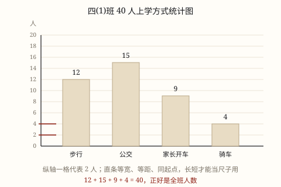

条形统计图
用直条的长短表示数量的多少。四条直条一样宽、间隔一样、都从 0 出发，长短才当得了尺子；读图第一步，是看清一格代表几。
| 所属主题 | 统计图 |
|---|---|
| 所属模块 | 统计与概率 |
| 课标学段 | 第二学段（3~4年级） |
| 前置知识 | 统计表 |
| 核心素养 | 数据意识几何直观 |
教材定位
人民教育出版社《2024年版》
对应四上第 6 单元「条形统计图」：条形统计图与一格表示多个单位。
课标要求
| 统计与概率·数据的收集、整理与表达 | 认识条形统计图，会用条形统计图合理表示和分析数据。 印刷第 38 页 行为动词：掌握 |
|---|---|
| 统计与概率·数据的收集、整理与表达 | 能读懂报纸、电视、互联网等媒体中的简单统计图表。 印刷第 38 页 行为动词：了解 |
说明
班里想给课间加一个「跳绳角」，先得知道同学上学都怎么来。调查结果是：步行 12 人、公交 15 人、家长开车 9 人、骑车 4 人。四个数写成一行也能看，可要回答「哪种方式人最多」，得一个一个比过去。把每个数画成一根直条，长短一摆，答案自己跳出来（图 1）。
条形统计图的结构：标题（画的什么）、横轴（分成几类）、纵轴（数量，要有刻度和单位）、直条（等宽、等距、从同一条底线出发）、条顶标数。这五样缺一样，图就读不准。
「一格代表几」是条形图的命门。四(1)班人数只有 4~15，一格代表 2 人正好，纵轴 10 格就够画到 20 人；要是统计全校 800 人，一格就得代表 100 人。同一组数据，一格代表 1 和代表 2，读出来的数完全不同——所以读图第一件事，是抬头看纵轴。
类别名字太长时，把图横过来。像「家长开车接送」六个字，竖着排在横轴下会挤成一团；把类别放到纵轴、直条横着躺，字就写得下了。横条和竖条只是方向不同，读法一样。
复式条形图把两组数据画在一起：同一类别下并排两根直条，一根男生、一根女生，颜色或条纹区分，右上角配图例。这样比的是「同一类里两组谁多」，而不是「哪一类最多」。
还有一句要记住：直条的宽度不重要，长度才重要。把直条画宽一倍，数量一点没变。市面上很多立体柱状图正是靠「体积」骗眼睛：柱子又粗又高，看着像多了一倍，其实只多了一点。
使用场景
校园生活：各兴趣小组报名人数、各班借书量、同学上学方式——比较几类谁多谁少，最直接。
购物消费：文具店一周里几种笔记本的销量，进货前先看哪种走得快。
农业生产：几个大棚同一种蔬菜的产量，或者一块地几年的总产量（比较年份多少时也能用）。
绿化照明：小区里几种树的棵数、几条路的路灯数，一眼看出哪一片绿得少。
自然现象：一次分类统计中各类垃圾的重量，配合扇形图看占比更完整。
注意点
先看一格代表几，再数格子。一格代表 2 人时，数到 7 格是 14 人，不是 7 人。
纵轴必须从 0 开始。从 95 起画的图，会把 96 和 99 的微小差距画成天壤之别。
直条要等宽、等距、同底线。宽窄不一，人眼会拿面积去比，结论就偏了。
条顶标上数字。标了数，读图不用数格子，也方便别人核对。
条形图不比占比。它只说各类有多少，要说「占几成」，得先知道总数，或者换扇形图。
为什么是这样

图 1：公交的直条最长，骑车的最短——不用读数字，长短已经替你把话说完了
算理推导
为什么用「长度」来表示数量：人眼最擅长判断的是「同一起点下谁更长」，误差很小；判断角度、面积就差得多。所以比较多少，就用长度这个通道。
为什么直条必须从同一条底线出发：两根柱子起点不同，一根从 0 起、一根从台阶上起，长短就没法比。同底线是「可比」的前提，这也是纵轴必须从 0 开始的原因。
为什么刻度要均匀：一格代表 2 人，那么每往上一格都表示多 2 人。刻度忽大忽小，「两格」和「三格」的差就不是固定的一个格，长度也就不再和数量成正比。
为什么直条之间要留空、不连起来：上学方式这四类之间没有先后顺序，步行完了不是公交。分开画，才表示「这是四件并列的事」；一连起来，就变成「变化过程」了，那是折线图的活。
动手实验
用方格纸剪几条一样宽的纸条当直条，一格代表 2 人，在纸上摆出 12、15、9、4 四种上学方式，条顶写上数字。摆完做三件事：一、把整张纸转 90 度，改成横条，看结论有没有变；二、把「骑车」那条剪短一格，看它代表的人数少了几个；三、把纵轴起点抬高两格再画一遍，看四条直条的长短关系是不是还那么明显。
按场景的例题
例 1（场景：校园生活） 读本班上学方式的条形图
看图 1：四(1)班 40 人的上学方式，步行 12 人、公交 15 人、家长开车 9 人、骑车 4 人。哪种方式人最多？最多的比最少的多多少人？四类加起来对不对？
解：直条最长的是公交 15 人，最短的是骑车 4 人；15 - 4 = 11（人）。四类相加 12 + 15 + 9 + 4 = 40，正好是全班人数。
答：公交最多 15 人，骑车最少 4 人，相差 11 人；合计 40 人，与全班人数一致。
例 2（场景：购物消费） 文具店一周的笔记本销量
文具店的条形图里，一格代表 4 本。四种笔记本的直条分别占了 7 格、5 格、8 格、3 格。四种各卖了多少本？如果 D 种下周预计卖 24 本，该画几格？
解：格数乘每格代表的数量：7 × 4 = 28、5 × 4 = 20、8 × 4 = 32、3 × 4 = 12。24 本对应 24 ÷ 4 = 6 格。
答：分别卖了 28、20、32、12 本；24 本要画 6 格。数量 = 格数 × 每格代表的数量，反过来也能算格数。
例 3（场景：农业生产） 四个大棚的黄瓜产量
一张条形图统计四个大棚的黄瓜产量，一格代表 50 千克，四条直条分别占 6 格、5 格、7 格、8 格。四号棚比二号棚多收多少千克？四个棚一共收多少？
解：各棚产量：6 × 50 = 300、5 × 50 = 250、7 × 50 = 350、8 × 50 = 400（千克）。四号比二号多 400 - 250 = 150 千克；合计 300 + 250 + 350 + 400 = 1300 千克。
答：四号棚多 150 千克；四个棚共 1300 千克。也可以先比格数：8 格比 5 格多 3 格，3 × 50 = 150。
例 4（场景：绿化照明） 小区四种树的棵数
小区绿化统计图里，一格代表 20 棵：香樟 8 格、桂花 5 格、银杏 3 格、梧桐 6 格。香樟比银杏多多少棵？如果要把四种树补种到同样多，补种总数是多少棵？
解：香樟 8 × 20 = 160 棵，银杏 3 × 20 = 60 棵，相差 100 棵。四种树平均每种要补到 160 棵（最多的那一种），补种数：(8-8) + (8-5) + (8-3) + (8-6) = 0 + 3 + 5 + 2 = 10 格，10 × 20 = 200 棵。
答：香樟比银杏多 100 棵；补到同样多需要补种 200 棵。
常用推论
数量 = 格数 × 每格代表的数量；反过来，格数 = 数量 ÷ 每格代表的数量。
直条最高的那一类数量最多，最矮的最少；同一图里两条直条的高度差，就是它们的数量差。
读条形图三步：看标题、看纵轴一格代表几、再数格子（或直接看条顶的数）。
条形图能看出各类的多少和差距，看不出随时间的变化趋势，也看不出各类占整体的几成。
复式条形图的两组数据必须用同一刻度，才能并排比较。
易错点
错纵轴一格代表 2 人，某根直条占了 7 格，就说这一类有 7 人。
为什么错把「格数」当成了「数量」，漏乘每格代表的 2 人。
正确7 × 2 = 14 人。读图先看纵轴一格代表几，是条形图的第一条规矩。
错为了「看得清楚」，纵轴从 95 开始画，把 96 人和 99 人画成一高一低差很多。
为什么错截断纵轴等于换了尺子的起点，长度不再和数量成正比，差距被放大了好几倍。
正确纵轴从 0 开始。数字差别很小时，可以改成一格代表更小的数量，或者干脆用表格列出准确值。
错用条形图说明「这几年参加社团的人数越来越多」。
为什么错条形图的各类是并列的，时间顺序被抹掉了，柱子并排站着看不出先后，更说不上趋势。
正确要看逐年变化，用折线统计图；要同时看数量和变化，就在折线图上标出每个点。
错看 3D 立体柱状图，觉得那根又粗又高的柱子「差不多是旁边那根的两倍」。
为什么错立体柱子用体积表示数量，宽度和厚度也被放大，眼睛会把面积、体积当成长度来读。
正确只比高度（或长度），不看宽窄；遇到立体图，先找纵轴的数值。
直观理解
条形图像操场上的身高墙：所有人脚跟贴同一条地面线，谁头顶高谁就高。要是有人偷偷站在台阶上量，比出来的高度就不算数了——这就是「纵轴必须从 0 开始」的意思。
直条长短比多少，一格代表要记牢；同底等宽又等距，从零起画才公道。